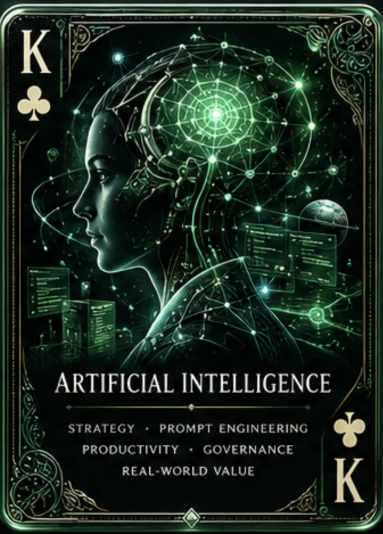
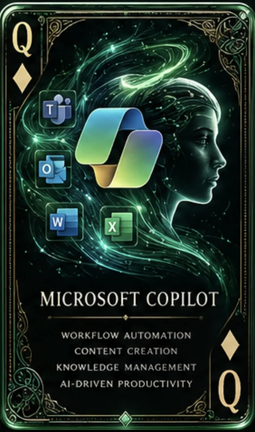
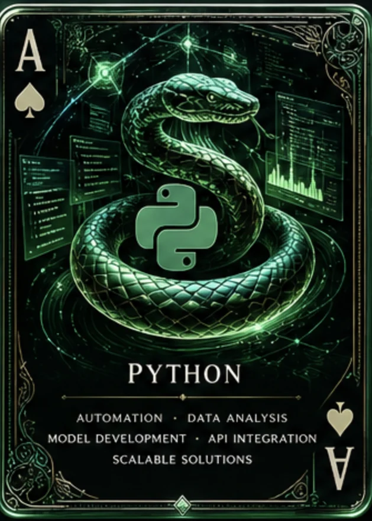
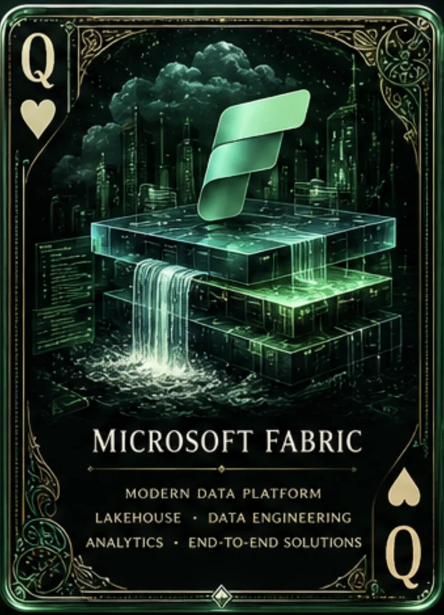
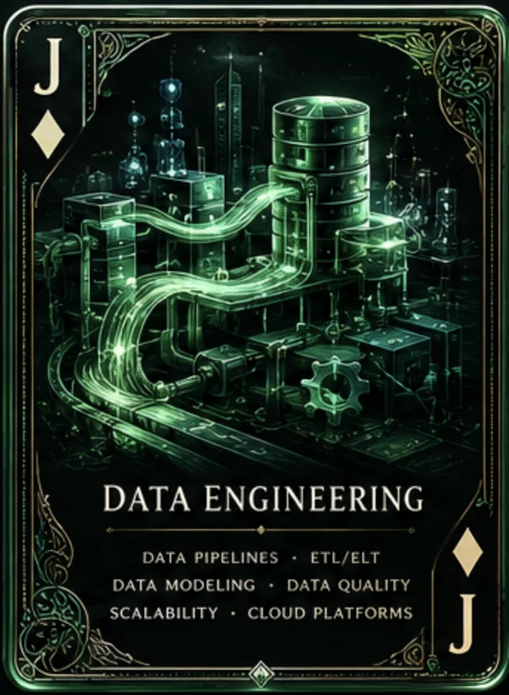
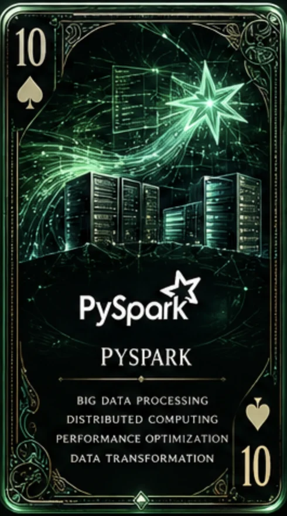
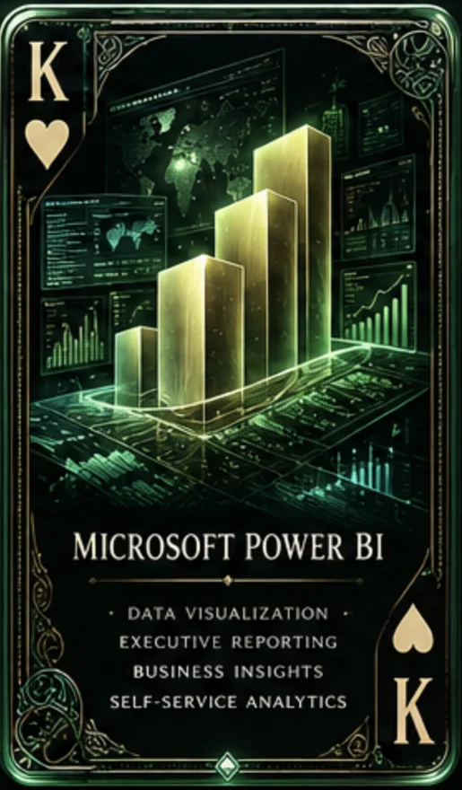
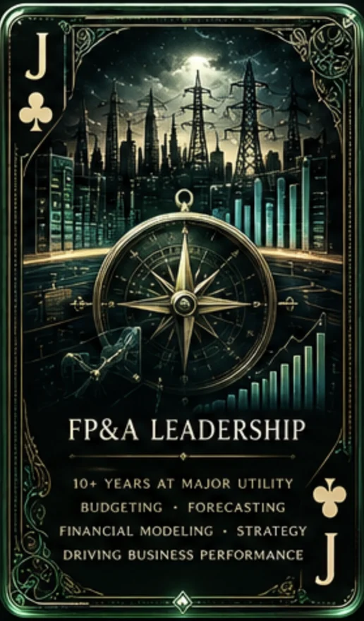
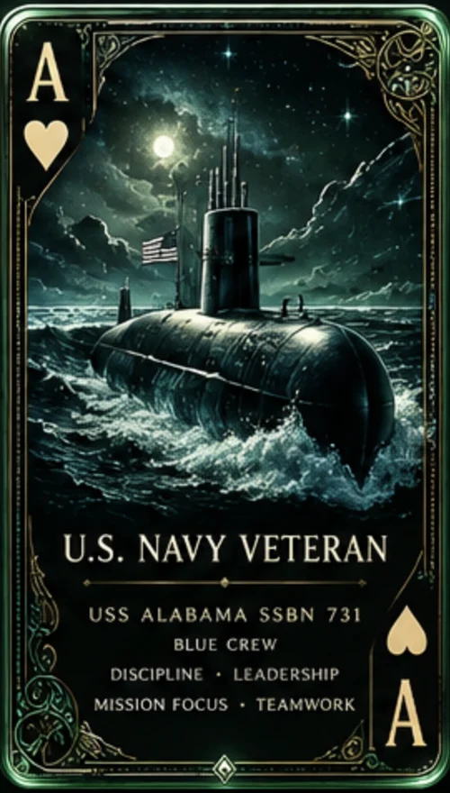

OCR pipeline:live in production~5,000received the Copilot guide~150trained hands-onProject deck from one CSV:hours → seconds
Todd Fox
AI enablement · PG&E
Log 01 · Service record
Critical thinker. Relentless problem solver. I turn AI licenses into AI fluency.
Problems solved on a submarine, at the IRS, in a university finance office, at a major utility and in AI adoption.Problems solved ▸onasubmarine
US NavyElectronics Technician (navigation), Petty Officer Third Class, USS Alabama (SSBN-731), Blue crew. Submarine-qualified, served during Desert Storm, honorable discharge.
Before PG&EAward-winning Director of Financial Aid at Everest University; senior financial analyst roles; IRS Revenue Officer; and years on the front line with customers in restaurants and car sales.
PG&E · since 2016Principal Operations Data Analyst, leading a grassroots AI enablement effort that is now backed by leadership. Previously Senior, Expert and Principal Business Finance Analyst.
EducationMBA, Florida Metropolitan University (2010) · BS Finance, Kent State (2005) · Data Analytics, UC Berkeley (2018) · AI coursework from Deep Learning (2018) to Anthropic Academy (2026).
How I work
Find the real problem first. Then make AI part of the fix.
From a submarine to the IRS, a university finance office and ten years at PG&E, the job has always been the same: understand the problem, then fix it. Now I write the guides, train the people and build the automations that make AI part of how work actually gets done.
Nine skills across AI, data engineering and finance, from strategy to the code that ships it. Each card names a skill; the line beneath it shows where I've put it to work.









King of clubs · Artificial IntelligenceLeads a grassroots AI enablement effort at PG&E: guides, hands-on training and automation for teams across the company.
Card 01 / 09
Drag, swipe or use the arrows
King of clubs · Artificial Intelligence — Leads a grassroots AI enablement effort at PG&E: guides, hands-on training and automation for teams across the company.
Queen of diamonds · Microsoft Copilot — Wrote The Expert's Guide to Microsoft 365 Copilot, sent to ~5,000 employees, and trained ~150 people hands-on.
Ace of spades · Python — A Python pipeline pulls, cleanses and summarizes financial data from multiple systems and delivers metric reports to leadership automatically.
Queen of hearts · Microsoft Fabric — Wrote The Expert's Guide to Microsoft Fabric; its patterns are being validated in an enterprise Fabric workspace.
Jack of diamonds · Data Engineering — Built an OCR document pipeline that is live in production with executive approval.
Ten of spades · PySpark — Spark notebooks in an enterprise Microsoft Fabric workspace, used to test and document end-to-end lakehouse patterns.
King of hearts · Microsoft Power BI — Process automation for an operations team cut its overall monthly report-development time by 10%; PowerShell scripts now build the monthly decks and PDFs from the Power BI API.
Jack of clubs · FP&A Leadership — Led an enterprise overtime/double-time (OT/DT) dashboard that prompted updated work rules and fewer 16-hour shifts, and built models that improve forecast accuracy on key financial metrics.
Ace of hearts · U.S. Navy Veteran — Navigation ET aboard USS Alabama (SSBN-731), Blue crew. Submarine-qualified; served during Desert Storm.
Log 03 · Qualified
Qualifying on a submarine means learning every system aboard, not only your own.
That's how I learn AI tools. Then I teach them, build with them and measure what changed.
01 TeachGuides and hands-on sessions that take people from curious to capable.
02 BuildAutomations a team can use on Monday, not demos.
03 MeasureTrack the result. One process automation cut a team's overall monthly report-development time by 10%.
04 ScaleDesigning a tiered Copilot certification program, with incentives, that can outlast any one champion.
Case file · The 16-hour shifts
Problem
Coworkers were repeatedly working 16-hour shifts.
Approach
Led the build of an enterprise overtime/double-time dashboard so the pattern was visible across the organization.
Result
Work rules were updated and the number of 16-hour shifts came down.
Log 04 · Course plotted
Every fix on the chart led here.
Fix 1 · US Navy · Early 1990sElectronics Technician (navigation) on USS Alabama (SSBN-731), a ballistic-missile submarine. Qualified in submarines; served during Desert Storm.
Fix 2 · Front linesCustomer-facing work as a waiter and bartender and in car sales, then as an IRS Revenue Officer.
Fix 3 · 2008–2014 · Director of Financial AidAward-winning Director of Financial Aid at Everest University. Ran campus student-finance operations to federal and state rules and coached a team through monthly reviews. MBA, 2010.
Fix 4 · 2014–2016 · Financial analystSenior Financial Analyst at Heald College, then Senior Project Financial Analyst with consultancy DR McNatty & Associates, running project controls for PG&E major greenfield projects with a VBA-driven budget control system.
Fix 5 · 2016 · PG&E financeJoined PG&E; Senior, Expert, then Principal Business Finance Analyst (May 2020). Led an enterprise overtime/double-time dashboard that prompted updated work rules and fewer 16-hour shifts, and engineered a Python pipeline that delivers tailored metric reports to leadership automatically.
Fix 6 · Current role · Principal Ops Data AnalystMoved from finance into operations data. Built Power BI reporting automation, an OCR document pipeline now live in production, and Microsoft Fabric lakehouse work.
Now · Same role, leading AI enablementA grassroots effort alongside the day job, now backed by leadership. Guides, hands-on training and automation: The Expert's Guide to Microsoft 365 Copilot, sent to ~5,000 employees; ~150 people trained hands-on; and a proposed Copilot certification program.
Hover or tab to a fix for its log entryPlotting course